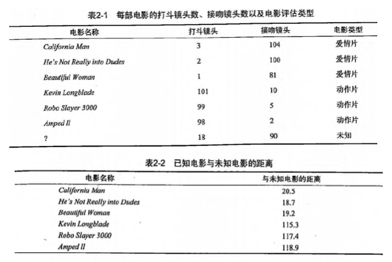
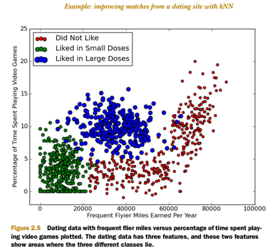
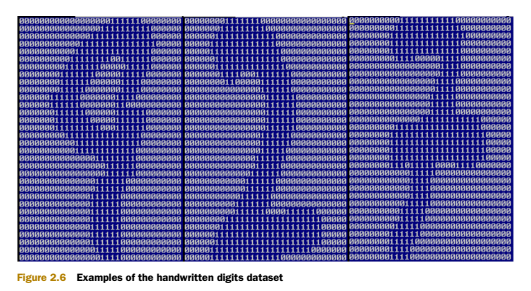
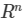
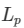

第2章 k-近邻算法¶
KNN 概述¶
k-近邻（kNN, k-NearestNeighbor）算法是一种基本分类与回归方法，我们这里只讨论分类问题中的 k-近邻算法。
一句话总结：近朱者赤近墨者黑！
k 近邻算法的输入为实例的特征向量，对应于特征空间的点；输出为实例的类别，可以取多类。k 近邻算法假设给定一个训练数据集，其中的实例类别已定。分类时，对新的实例，根据其 k 个最近邻的训练实例的类别，通过多数表决等方式进行预测。因此，k近邻算法不具有显式的学习过程。
k 近邻算法实际上利用训练数据集对特征向量空间进行划分，并作为其分类的“模型”。 k值的选择、距离度量以及分类决策规则是k近邻算法的三个基本要素。
KNN 场景¶
电影可以按照题材分类，那么如何区分 动作片 和 爱情片 呢？
1. 动作片：打斗次数更多
2. 爱情片：亲吻次数更多
基于电影中的亲吻、打斗出现的次数，使用 k-近邻算法构造程序，就可以自动划分电影的题材类型。

现在根据上面我们得到的样本集中所有电影与未知电影的距离，按照距离递增排序，可以找到 k 个距离最近的电影。 假定 k=3，则三个最靠近的电影依次是， He's Not Really into Dudes 、 Beautiful Woman 和 California Man。 knn 算法按照距离最近的三部电影的类型，决定未知电影的类型，而这三部电影全是爱情片，因此我们判定未知电影是爱情片。
KNN 原理¶
KNN 工作原理
- 假设有一个带有标签的样本数据集（训练样本集），其中包含每条数据与所属分类的对应关系。
- 输入没有标签的新数据后，将新数据的每个特征与样本集中数据对应的特征进行比较。
- 计算新数据与样本数据集中每条数据的距离。
- 对求得的所有距离进行排序（从小到大，越小表示越相似）。
- 取前 k （k 一般小于等于 20 ）个样本数据对应的分类标签。
- 求 k 个数据中出现次数最多的分类标签作为新数据的分类。
KNN 通俗理解
给定一个训练数据集，对新的输入实例，在训练数据集中找到与该实例最邻近的 k 个实例，这 k 个实例的多数属于某个类，就把该输入实例分为这个类。
KNN 开发流程
收集数据：任何方法 准备数据：距离计算所需要的数值，最好是结构化的数据格式 分析数据：任何方法 训练算法：此步骤不适用于 k-近邻算法 测试算法：计算错误率 使用算法：输入样本数据和结构化的输出结果，然后运行 k-近邻算法判断输入数据分类属于哪个分类，最后对计算出的分类执行后续处理
KNN 算法特点
优点：精度高、对异常值不敏感、无数据输入假定 缺点：计算复杂度高、空间复杂度高 适用数据范围：数值型和标称型
KNN 项目案例¶
项目案例1: 优化约会网站的配对效果¶
完整代码地址: https://github.com/apachecn/MachineLearning/blob/master/src/python/2.KNN/kNN.py
项目概述¶
海伦使用约会网站寻找约会对象。经过一段时间之后，她发现曾交往过三种类型的人: * 不喜欢的人 * 魅力一般的人 * 极具魅力的人
她希望： 1. 工作日与魅力一般的人约会 2. 周末与极具魅力的人约会 3. 不喜欢的人则直接排除掉
现在她收集到了一些约会网站未曾记录的数据信息，这更有助于匹配对象的归类。
开发流程¶
收集数据：提供文本文件
准备数据：使用 Python 解析文本文件
分析数据：使用 Matplotlib 画二维散点图
训练算法：此步骤不适用于 k-近邻算法
测试算法：使用海伦提供的部分数据作为测试样本。
测试样本和非测试样本的区别在于：
测试样本是已经完成分类的数据，如果预测分类与实际类别不同，则标记为一个错误。
使用算法：产生简单的命令行程序，然后海伦可以输入一些特征数据以判断对方是否为自己喜欢的类型。
收集数据：提供文本文件
海伦把这些约会对象的数据存放在文本文件 datingTestSet2.txt 中，总共有 1000 行。海伦约会的对象主要包含以下 3 种特征：
- 每年获得的飞行常客里程数
- 玩视频游戏所耗时间百分比
- 每周消费的冰淇淋公升数
文本文件数据格式如下：
40920 8.326976 0.953952 3 14488 7.153469 1.673904 2 26052 1.441871 0.805124 1 75136 13.147394 0.428964 1 38344 1.669788 0.134296 1
准备数据：使用 Python 解析文本文件
将文本记录转换为 NumPy 的解析程序
```python def file2matrix(filename): """ Desc: 导入训练数据 parameters: filename: 数据文件路径 return: 数据矩阵 returnMat 和对应的类别 classLabelVector """ fr = open(filename) # 获得文件中的数据行的行数 numberOfLines = len(fr.readlines()) # 生成对应的空矩阵 # 例如：zeros(2，3)就是生成一个 2*3的矩阵，各个位置上全是 0 returnMat = zeros((numberOfLines, 3)) # prepare matrix to return classLabelVector = [] # prepare labels return fr = open(filename) index = 0 for line in fr.readlines(): # str.strip([chars]) --返回移除字符串头尾指定的字符生成的新字符串 line = line.strip() # 以 '\t' 切割字符串 listFromLine = line.split('\t') # 每列的属性数据 returnMat[index, :] = listFromLine[0:3] # 每列的类别数据，就是 label 标签数据 classLabelVector.append(int(listFromLine[-1])) index += 1 # 返回数据矩阵returnMat和对应的类别classLabelVector return returnMat, classLabelVector
> 分析数据：使用 Matplotlib 画二维散点图 ```python import matplotlib import matplotlib.pyplot as plt fig = plt.figure() ax = fig.add_subplot(111) ax.scatter(datingDataMat[:, 0], datingDataMat[:, 1], 15.0*array(datingLabels), 15.0*array(datingLabels)) plt.show()
下图中采用矩阵的第一和第二列属性得到很好的展示效果，清晰地标识了三个不同的样本分类区域，具有不同爱好的人其类别区域也不同。

- 归一化数据 （归一化是一个让权重变为统一的过程，更多细节请参考： https://www.zhihu.com/question/19951858 ）
| 序号 | 玩视频游戏所耗时间百分比 | 每年获得的飞行常客里程数 | 每周消费的冰淇淋公升数 | 样本分类 |
|---|---|---|---|---|
| 1 | 0.8 | 400 | 0.5 | 1 |
| 2 | 12 | 134 000 | 0.9 | 3 |
| 3 | 0 | 20 000 | 1.1 | 2 |
| 4 | 67 | 32 000 | 0.1 | 2 |
样本3和样本4的距离： \sqrt{(0-67)^2 + (20000-32000)^2 + (1.1-0.1)^2 }
归一化特征值，消除特征之间量级不同导致的影响
归一化定义： 我是这样认为的，归一化就是要把你需要处理的数据经过处理后（通过某种算法）限制在你需要的一定范围内。首先归一化是为了后面数据处理的方便，其次是保正程序运行时收敛加快。 方法有如下：
1) 线性函数转换，表达式如下：
y=(x-MinValue)/(MaxValue-MinValue) 说明：x、y分别为转换前、后的值，MaxValue、MinValue分别为样本的最大值和最小值。
2) 对数函数转换，表达式如下：
y=log10(x) 说明：以10为底的对数函数转换。 如图： 
3) 反余切函数转换，表达式如下：
y=arctan(x)*2/PI 如图： 
4) 式(1)将输入值换算为[-1,1]区间的值，在输出层用式(2)换算回初始值，其中和分别表示训练样本集中负荷的最大值和最小值。
在统计学中，归一化的具体作用是归纳统一样本的统计分布性。归一化在0-1之间是统计的概率分布，归一化在-1--+1之间是统计的坐标分布。
def autoNorm(dataSet): """ Desc: 归一化特征值，消除特征之间量级不同导致的影响 parameter: dataSet: 数据集 return: 归一化后的数据集 normDataSet. ranges和minVals即最小值与范围，并没有用到 归一化公式： Y = (X-Xmin)/(Xmax-Xmin) 其中的 min 和 max 分别是数据集中的最小特征值和最大特征值。该函数可以自动将数字特征值转化为0到1的区间。 """ # 计算每种属性的最大值、最小值、范围 minVals = dataSet.min(0) maxVals = dataSet.max(0) # 极差 ranges = maxVals - minVals normDataSet = zeros(shape(dataSet)) m = dataSet.shape[0] # 生成与最小值之差组成的矩阵 normDataSet = dataSet - tile(minVals, (m, 1)) # 将最小值之差除以范围组成矩阵 normDataSet = normDataSet / tile(ranges, (m, 1)) # element wise divide return normDataSet, ranges, minVals
训练算法：此步骤不适用于 k-近邻算法
因为测试数据每一次都要与全量的训练数据进行比较，所以这个过程是没有必要的。
kNN 算法伪代码：
对于每一个在数据集中的数据点：
计算目标的数据点（需要分类的数据点）与该数据点的距离
将距离排序：从小到大
选取前K个最短距离
选取这K个中最多的分类类别
返回该类别来作为目标数据点的预测值
python
def classify0(inX, dataSet, labels, k):
dataSetSize = dataSet.shape[0]
#距离度量 度量公式为欧氏距离
diffMat = tile(inX, (dataSetSize,1)) – dataSet
sqDiffMat = diffMat**2
sqDistances = sqDiffMat.sum(axis=1)
distances = sqDistances**0.5
#将距离排序：从小到大
sortedDistIndicies = distances.argsort()
#选取前K个最短距离， 选取这K个中最多的分类类别
classCount={}
for i in range(k)：
voteIlabel = labels[sortedDistIndicies[i]]
classCount[voteIlabel] = classCount.get(voteIlabel,0) + 1
sortedClassCount = sorted(classCount.iteritems(), key=operator.itemgetter(1), reverse=True)
return sortedClassCount[0][0]
测试算法：使用海伦提供的部分数据作为测试样本。如果预测分类与实际类别不同，则标记为一个错误。
kNN 分类器针对约会网站的测试代码
def datingClassTest(): """ Desc: 对约会网站的测试方法 parameters: none return: 错误数 """ # 设置测试数据的的一个比例（训练数据集比例=1-hoRatio） hoRatio = 0.1 # 测试范围,一部分测试一部分作为样本 # 从文件中加载数据 datingDataMat, datingLabels = file2matrix('input/2.KNN/datingTestSet2.txt') # load data setfrom file # 归一化数据 normMat, ranges, minVals = autoNorm(datingDataMat) # m 表示数据的行数，即矩阵的第一维 m = normMat.shape[0] # 设置测试的样本数量， numTestVecs:m表示训练样本的数量 numTestVecs = int(m * hoRatio) print 'numTestVecs=', numTestVecs errorCount = 0.0 for i in range(numTestVecs): # 对数据测试 classifierResult = classify0(normMat[i, :], normMat[numTestVecs:m, :], datingLabels[numTestVecs:m], 3) print "the classifier came back with: %d, the real answer is: %d" % (classifierResult, datingLabels[i]) if (classifierResult != datingLabels[i]): errorCount += 1.0 print "the total error rate is: %f" % (errorCount / float(numTestVecs)) print errorCount
使用算法：产生简单的命令行程序，然后海伦可以输入一些特征数据以判断对方是否为自己喜欢的类型。
约会网站预测函数
def classifyPerson(): resultList = ['not at all', 'in small doses', 'in large doses'] percentTats = float(raw_input("percentage of time spent playing video games ?")) ffMiles = float(raw_input("frequent filer miles earned per year?")) iceCream = float(raw_input("liters of ice cream consumed per year?")) datingDataMat, datingLabels = file2matrix('datingTestSet2.txt') normMat, ranges, minVals = autoNorm(datingDataMat) inArr = array([ffMiles, percentTats, iceCream]) classifierResult = classify0((inArr-minVals)/ranges,normMat,datingLabels, 3) print "You will probably like this person: ", resultList[classifierResult - 1]
实际运行效果如下:
>>> classifyPerson() percentage of time spent playing video games?10 frequent flier miles earned per year?10000 liters of ice cream consumed per year?0.5 You will probably like this person: in small doses
项目案例2: 手写数字识别系统¶
完整代码地址: https://github.com/apachecn/MachineLearning/blob/master/src/python/2.KNN/kNN.py
项目概述¶
构造一个能识别数字 0 到 9 的基于 KNN 分类器的手写数字识别系统。
需要识别的数字是存储在文本文件中的具有相同的色彩和大小：宽高是 32 像素 * 32 像素的黑白图像。
开发流程¶
收集数据：提供文本文件。
准备数据：编写函数 img2vector(), 将图像格式转换为分类器使用的向量格式
分析数据：在 Python 命令提示符中检查数据，确保它符合要求
训练算法：此步骤不适用于 KNN
测试算法：编写函数使用提供的部分数据集作为测试样本，测试样本与非测试样本的
区别在于测试样本是已经完成分类的数据，如果预测分类与实际类别不同，
则标记为一个错误
使用算法：本例没有完成此步骤，若你感兴趣可以构建完整的应用程序，从图像中提取
数字，并完成数字识别，美国的邮件分拣系统就是一个实际运行的类似系统
收集数据: 提供文本文件
目录 trainingDigits 中包含了大约 2000 个例子，每个例子内容如下图所示，每个数字大约有 200 个样本；目录 testDigits 中包含了大约 900 个测试数据。

准备数据: 编写函数 img2vector(), 将图像文本数据转换为分类器使用的向量
将图像文本数据转换为向量
def img2vector(filename): returnVect = zeros((1,1024)) fr = open(filename) for i in range(32): lineStr = fr.readline() for j in range(32): returnVect[0,32*i+j] = int(lineStr[j]) return returnVect
分析数据：在 Python 命令提示符中检查数据，确保它符合要求
在 Python 命令行中输入下列命令测试 img2vector 函数，然后与文本编辑器打开的文件进行比较:
>>> testVector = kNN.img2vector('testDigits/0_13.txt') >>> testVector[0,0:32] array([0., 0., 0., 0., 0., 0., 0., 0., 0., 0., 0., 0., 0., 0., 1., 1., 1., 1., 0., 0., 0., 0., 0., 0., 0., 0., 0., 0., 0., 0., 0.]) >>> testVector[0,32:64] array([0., 0., 0., 0., 0., 0., 0., 0., 0., 0., 0., 0., 1., 1., 1., 1., 1., 1., 1., 0., 0., 0., 0., 0., 0., 0., 0., 0., 0., 0., 0.])
训练算法：此步骤不适用于 KNN
因为测试数据每一次都要与全量的训练数据进行比较，所以这个过程是没有必要的。
测试算法：编写函数使用提供的部分数据集作为测试样本，如果预测分类与实际类别不同，则标记为一个错误
def handwritingClassTest(): # 1. 导入训练数据 hwLabels = [] trainingFileList = listdir('input/2.KNN/trainingDigits') # load the training set m = len(trainingFileList) trainingMat = zeros((m, 1024)) # hwLabels存储0～9对应的index位置， trainingMat存放的每个位置对应的图片向量 for i in range(m): fileNameStr = trainingFileList[i] fileStr = fileNameStr.split('.')[0] # take off .txt classNumStr = int(fileStr.split('_')[0]) hwLabels.append(classNumStr) # 将 32*32的矩阵->1*1024的矩阵 trainingMat[i, :] = img2vector('input/2.KNN/trainingDigits/%s' % fileNameStr) # 2. 导入测试数据 testFileList = listdir('input/2.KNN/testDigits') # iterate through the test set errorCount = 0.0 mTest = len(testFileList) for i in range(mTest): fileNameStr = testFileList[i] fileStr = fileNameStr.split('.')[0] # take off .txt classNumStr = int(fileStr.split('_')[0]) vectorUnderTest = img2vector('input/2.KNN/testDigits/%s' % fileNameStr) classifierResult = classify0(vectorUnderTest, trainingMat, hwLabels, 3) print "the classifier came back with: %d, the real answer is: %d" % (classifierResult, classNumStr) if (classifierResult != classNumStr): errorCount += 1.0 print "\nthe total number of errors is: %d" % errorCount print "\nthe total error rate is: %f" % (errorCount / float(mTest))
使用算法：本例没有完成此步骤，若你感兴趣可以构建完整的应用程序，从图像中提取数字，并完成数字识别，美国的邮件分拣系统就是一个实际运行的类似系统
KNN 小结¶
经过上面的介绍我们可以知道， k 近邻算法有 三个基本的要素：
-
k 值的选择
- k 值的选择会对 k 近邻算法的结果产生重大的影响。
- 如果选择较小的 k 值，就相当于用较小的邻域中的训练实例进行预测，“学习”的近似误差（approximation error）会减小，只有与输入实例较近的（相似的）训练实例才会对预测结果起作用。但缺点是“学习”的估计误差（estimation error）会增大，预测结果会对近邻的实例点非常敏感。如果邻近的实例点恰巧是噪声，预测就会出错。换句话说，k 值的减小就意味着整体模型变得复杂，容易发生过拟合。
- 如果选择较大的 k 值，就相当于用较大的邻域中的训练实例进行预测。其优点是可以减少学习的估计误差。但缺点是学习的近似误差会增大。这时与输入实例较远的（不相似的）训练实例也会对预测起作用，使预测发生错误。 k 值的增大就意味着整体的模型变得简单。
- 近似误差和估计误差，请看这里：https://www.zhihu.com/question/60793482
-
距离度量
- 特征空间中两个实例点的距离是两个实例点相似程度的反映。
- k 近邻模型的特征空间一般是 n 维实数向量空间  。使用的距离是欧氏距离，但也可以是其他距离，如更一般的  距离，或者 Minkowski 距离。
-
分类决策规则
- k 近邻算法中的分类决策规则往往是多数表决，即由输入实例的 k 个邻近的训练实例中的多数类决定输入实例的类。
- 作者：羊三 小瑶
- GitHub地址: https://github.com/apachecn/MachineLearning
- 版权声明：欢迎转载学习 => 请标注信息来源于 ApacheCN